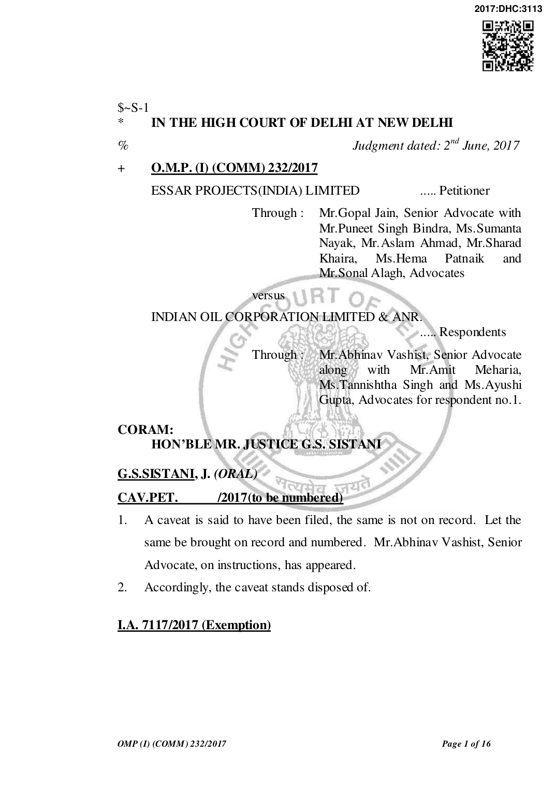
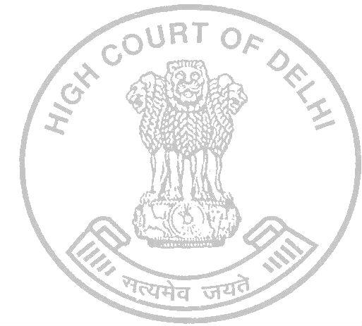

- This is an application filed by petitioner under Section 151 of the Code of Civil Procedure seeking exemption from filing original documents relied upon by the petitioner at this stage.
- The original documents relied upon shall be filed by the petitioner within eight weeks from today.
- Application stands disposed of.
I.A. 7118/2017 (Exemption)

- This is an application filed by petitioner under Section 151 of the Code of Civil Procedure seeking exemption from filing typed copy of dim annexures relied upon by the petitioner.
- Let the legible copies/typed copy of the dim annexures be filed by the petitioner within eight weeks from today.
- Application stands disposed of.
I.A. 7116/2017 (Exemption)
- This is an application filed by petitioner under Section 151 of the Code of Civil Procedure seeking exemption from filing complete copy of Contract dated 28.02.2011.
- Let the complete set of Contract be filed by the petitioner within six weeks from today.
- Application stands disposed of.
O.M.P. (I) (COMM) 232/2017
- This petition under Section 9 of the Arbitration and Conciliation Act, 1996 has been listed upon mentioning.
- By the present petition, the petitioner inter alia prays for restraining the respondents from encashing bank guarantees no.160004IBGA00036 and 16000IBGA00037 dated 28.03.2016.
- Mr. Gopal Jain, learned Senior Counsel for the petitioner submits that the petitioner was awarded a contract (for short „EPC contract‟) on 28.02.2011, also known as Paradip Refinery Project (hereinafter referred to as the „Project‟) of Indian Oil Corporation („IOC‟)/respondent no.1. It is the case of the petitioner that M/s. Foster

Wheeler was appointed as the Project Management Consultant and the project stands concluded and was, in fact, inaugurated by the Prime Minister of India on 07.02.2016. During the pendency of the works, the petitioner had tendered two bank guarantees no. 160004IBGA00036 and 16000IBGA00037 dated 28.03.2016 in the sum of Rs.50 crores (previously 72 crores, later reduced to Rs.50 crores by amendment dated 12.04.2016) and Rs.31 crores respectively. The petitioner claims to have achieved mechanical clearance in 2015, but claims that mechanical completion was delayed due to reasons attributable to IOC. The mechanical completion certificate was issued to the petitioner after substantial delay in January-April, 2016. The petitioner claims that after mechanical completion, commissioning and PGTR including handover were required to take place within one month of mechanical completion; however, the same was taken up by the IOC only after March, 2017 for Part A Unit and for Part B was not taken up. Thereafter, the petitioner sought extension of time for Part A Units and Part B Units vide Letters dated 29.07.2016 and 23.09.2016 respectively.
- Thereafter, the petitioner claims that after the completion of the project, the petitioner waited for IOC to issue completion certificate; but since the same was not issued, the petitioner was constrained to write a letter dated 15.03.2017 requesting Foster to issue completion certificate. Ultimately, the petitioner raised a draft final bill claiming the pending amounts as well as additional sums on 22.03.2017. The petitioner by a detailed legal notice dated 12.04.2017 has invoked the arbitration clause and nominated a former Judge of the Supreme Court of India as the

Arbitrator. It is the case of the petitioner that large sums of money are due from the respondent no.1 amounting to Rs.82 crores, additional claim of Rs.347 crores which has not been processed and an additional claim of Rs.500 crores. It is also the case of the petitioner that post receipt of the legal notice in which the petitioner had detailed various disputes which had arisen between the parties and the amount due, the respondent no.1 in a hurry has created a demand in their favour in a clandestine manner and in utter haste invoked the bank guarantee by a communication dated 01.06.2017.
- Mr.Jain submits that in the absence of any adjudication with regard to any amount due to the respondent no.1, the bank guarantee cannot be invoked. He further submits that for the delay in completion of the work, extensions have already been granted in favour of the petitioner‟s contractor which is evident upon reading of communication dated 24.04.2017, wherein extension was granted of 1138 days excluding extension of 244 days. Another extension was granted by a communication dated 10.12.2016 of 116 days, while extension of 82 days was rejected.
- The sum and substance of the argument of the learned counsel for the petitioner is that the claims sought to be adjusted by the respondent no.1 have not been adjudicated and it is the petitioner who has to recover almost Rs.900 Crores from the respondent no.1. The learned Senior Counsel for the petitioner submits that the petitioner would be put to irreparable loss and till the final determination of the claims of the respondents are adjudicated upon and in case the bank guarantees are allowed to be encashed, the petitioner would be put to serious loss and

thus, special equities flow in favour of the petitioner would be lost. Mr. Jain has strenuously urged before this Court that the respondent has given no reasons for invocation of the bank guarantee. Reliance is placed in the case of A.S. Motors Pvt. Ltd. v. Union of India (UOI) and Ors., (2013) 10 SCC 114 (paragraph 24).
- Relying upon J.G. Engineers Pvt. Ltd. v. Union of India (UOI) and Anr., (2011) 5 SCC 738 (paragraph 19 and 20) and State of Karnataka v. Shree Rameshwara Rice Mills, Thirthahalli, (1987) 2 SCC 160 (paragraph 7), Mr.Jain has further submitted that the respondent no.1 cannot be an arbiter in its own cause and decide both the question of breach and the quantum of damages and therefore, the petitioner is entitled to an injunctive order against the respondents.
- Per contra, Mr.Abhinav Vashist, learned Senior Counsel appearing for the respondent no.1, while relying on the terms of the bank guarantee submits that the bank guarantees in question are unconditional bank guarantees and an independent contract between the bank and the respondent no.1. It is submitted that in invocation of the bank guarantee, the amounts are to be paid without any protest or demur, which is incorporated in the terms of the bank guarantee and provided by the petitioner with open eyes. The learned Senior Counsel submits that both the bank guarantees are identical and relies on the following conditions of the bank guarantees: “We IDBI Bank Limited, a company incorporated and registered under the Companies Act, 1956 and a banking company within the meaning of Section 5(c) of the Banking Regulation Act, 1949, having registered office at IDBI Tower, WTC Complex, Cuffe Parade, Mumbai-400005 and, inter alia, a Branch Office at TPC, Mafatlal Centre, 4th

Floor, Mumbai-400021(hereinafter called the “Bank” which expression shall include its successors and assigns) at the request of the Contractor and with the intent to bind the Bank and its successors and assigns, do hereby unconditionally and irrevocably undertake to pay the Corporation at forthwith on first demand without protect or demur or proof or satisfaction and without reference to the Contractor, any and all amounts demanded from us by the Corporation with reference to this Undertaking upto an aggregate limit of Rs.31,00,00,000/- (Rupees Thirty One Crores only).... iii)The obligations of the Bank to the Corporation hereunder shall be as surety and shall be wholly independent of the Contract and it shall not be necessary for the Corporation to proceed against the Contractor before proceeding against the Bank and the guarantee/undertaking herein contained shall be enforceable against the Bank as Principal debtor notwithstanding the existence of any undertaking or security for any indebtedness of the Contractor to the Corporation(including relative to the said Payment) and notwithstanding that any such undertaking or security shall at the time when claim is made against the bank or proceedings taken against the Bank hereunder, be outstanding or unrealized. iv) As between the Bank and the Corporation for the purpose of this undertaking, the amount stated in any claim, demand or notice made by the Corporation on the Bank with reference to this undertaking shall be final and binding upon the Bank as to be the amount payable by the Bank to the Corporation hereunder. v) The liability of the Bank to the Corporation under this undertaking shall remain in full force and effect notwithstanding the existence of any difference or dispute between the Contractor and the Corporation, the Contractor and/or the Bank and/or the Bank and the Corporation or otherwise howsoever touching or affecting

these presents or the liability of the Contractor to the Corporation, and notwithstanding the existence of any instructions or purported instructions by the Contractor or any other person to the Bank not to pay or for any cause withhold or defer payment to the Corporation under these presents, with the intent that notwithstanding the existence of such difference, dispute or instruction, the Bank shall be and remain liable to make payment to the Corporation in terms thereof.” (Emphasis Supplied)
- It is contended by Mr. Vashist that on reading of the bank guarantee, it would leave no room for doubt that the parties had agreed that the petitioner would provide unconditional bank guarantees. The terms of the bank guarantees are clear and explicit and as an independent contract, the respondent no. 2 bank is not concerned with the disputes between the petitioner and respondent no.1. He submits that the law is well-settled that the courts would be slow in granting stay of invocation of an unconditional bank guarantee. He relies on the judgment in the case of Hindustan Steelworks Construction Ltd. v. Tarapore & Co. and Another, (1996) 5 SCC 34 (paragraphs 14 and 23) in support of his submission.
- I have heard the learned counsel for the parties and considered their rival submissions.
- The only ground urged before this Court is that special equities exist in favour of the petitioner entitling it to an injunction against the respondents. Mr.Jain substantiated his argument by submitting that extensions of time were granted by the respondent no.1, the amount due

from the petitioner has not been computed and that on the contrary, IOC owes about 900 crores to the petitioner therein.
- The scope of interference by courts in the invocation of the bank guarantees is no longer res integra. It has been repeatedly held that specially in cases of unconditional bank guarantees, the court should not interfere unless the petitioner is able to establish fraud of egregious nature or is able to plead special equities. I need not burden my opinion with numerous judicial pronouncements, suffice it to reproduce the relevant paragraphs of a judgment of this very Court in CWHEC-HCIL (JV) v. Calcutta Haldia Port Road Co. Ltd. & Ors., ILR (2008) 1 Del 353: “10. In light of the aforesaid discussion, the following principles governing the invocation of bank guarantees are culled out :
- A bank guarantee is an independent and distinct contract between the bank and the beneficiary.
- In the case of unconditional bank guarantees, the bank undertakes to give money to the beneficiary on demand, without demur or protest.
- Further, in unconditional bank guarantees, the nature of the obligation of the bank is absolute and not dependent upon any dispute or proceeding between the beneficiary of the bank guarantee and the party at whose instance the bank guarantee.
- As bank guarantees are fundamental to trade and commerce, both at the domestic and international level, the general rule is that courts of law should be slow and cautious in granting injunction to restrain their realization. For instance, courts should refrain from probing into the disputes between the parties or from embarking on questions as to whether the beneficiary is trying to take undue enrichment, etc.
- However, there are four exceptions to the aforesaid

general rule, that is, the court may grant injunction restraining the invocation of bank guarantee, if:
- there is a fraud of an egregious nature in connection with the bank guarantee which would vitiate the very foundation of such guarantee and the beneficiary seeks to take advantage of such fraud.
- the applicant, in the facts and circumstances of the case, clearly establishes a case of irretrievable injustice or irreparable damage.
- the applicant is able to establish exceptional or special equities of the kind which would outrage the conscience of the court.
- the bank guarantee is not invoked strictly in its terms and by the person empowered to invoke under the terms of the guarantee....
- The importance of bank guarantees in facilitating trade and commerce, both nationally and internationally, cannot be understated. An unconditional bank guarantee creates an irrevocable obligation on the bank to honour the bank guarantee irrespective of any dispute between the party furnishing the bank guarantee and the beneficiary thereof. This obligation of the bank manifests an act of trust and faith in order to mobilize practices pertaining to trade and commerce. The courts of law, too, should be extremely circumspective and sporadic in interfering with the invocation of bank guarantees, lest the free flow of trade and commerce is imperiled. The general rule is that the court, ordinarily, should avoid granting injunction to restrain the invocation of bank guarantee, unless it is prima facie satisfied that the act of the beneficiary/respondents is so glaring and unreasonable so as to cause irretrievable injury to the petitioner. The principle underlying the maxim judicis est in pronuntiando sequi regulam, exceptions non probat should be strictly adhered to by the Court in matters pertaining to stay on invocation of bank guarantees. That is to say, the judge in his decision ought to follow the rule, when the exception is not made apparent.”

(Emphasis Supplied)
- The first question which arises for consideration is whether the two bank guarantees which are identical in nature are unconditional or not. Reading of the terms of the bank guarantee, more particularly the clauses extracted in paragraph 20 aforegoing, leave no room for doubt that the petitioner had provided unconditional bank guarantees to the respondent no.1. [See M/s Constructora Sanjose S.A. v. Delhi Development Authority & Ors., 2016 SCC OnLine Del 6078]
- As regards, the submission of Mr.Jain that the respondent no.1 has acted as an arbiter in its own cause and decided the quantum of damages unilaterally, the question, in my view, stands fully answered in the case of Hindustan Steelworks Construction Ltd. (Supra). In the case, the appellant had granted a contract for construction of civil works in a steel plant to the contractor, which despite extensions was unable to complete the project within the stipulated time and the appellant rescinded the contract. As per the terms of the contract, the appellant assessed the loss/damages and invoked the bank guarantees. The contractor rushed before the Trial Court praying for an injunction restraining the appellant from invoking the bank guarantees to no avail and then approached the Andhra Pradesh High Court alleging that since the bank guarantees were given for securing due performance, the same would be encashable only after the arbitrators decide the factum of breach as well as the damage suffered. The High Court reversed the decision of the Trial Court finding that the liability to pay damages

would arise only after it is established that there is a breach of contract and same could be ascertained by the arbitrator. This did not find favour with the Apex Court, which allowed the appeals and observed as under: “6. ...After noticing that bank guarantees in this case except Bank Guarantees Nos. 3/21, 3/39 and 6/175 were given towards security deposits only it observed that: “Neither of the learned counsels had drawn attention of this Court to any decision granting or refusing injunction in regard to a bank guarantee given by way of security deposit to indemnify against any loss or damage caused by breach of the terms and conditions of the contract.” It then considered the position of law with respect to liquidated damages in our country and observed that: “Hence there cannot be any agreement in regard to the amount that has to be allowed except the upper limit that can be fixed, in case of breach.” Relying upon the decision of this Court in Union of India v. Raman Iron Foundry [(1974) 2 SCC 231 : AIR 1974 SC 1265] the High Court held that any term in the agreement that one of the parties shall be the sole judge to quantify the same has to be held as invalid. According to the High Court liability to pay damages would arise only after it is established that there is a breach of the contract and it is for the court or the arbitrator to decide as to who has committed the breach. Till the liability is ascertained, it cannot be said that there is a “debt due or debt owing”. On these grounds the High Court rejected the contention raised on behalf of HSCL that it was the sole judge to decide as to whether the contractor has committed a breach of the contract and what is the extent of damage caused to it. It also held that in the absence of any determination by the Court or the arbitrator no amount can be said to be payable by the contractor to HSCL by way of damages and, therefore, it will be just and proper to restrain HSCL from enforcing the bank guarantees. ...”...

- The High Court also committed a grave error in restraining the appellant from invoking bank guarantees on the ground that in India only a reasonable amount can be awarded by way of damages even when the parties to the contract have provided for liquidated damages and that a term in a bank guarantee making the beneficiary the sole judge on the question of breach of contract and the extent of loss or damages would be invalid and that no amount can be said to be due till an adjudication in that behalf is made either by a court or an arbitrator, as the case may be. In taking that view the High Court has overlooked the correct position that a bank guarantee is an independent and distinct contract between the bank and the beneficiary and is not qualified by the underlying transaction and the primary contract between the person at whose instance the bank guarantee is given and the beneficiary. What the High Court has observed would be applicable only to the parties to the underlying transaction or the primary contract but can have no relevance to the bank guarantee given by the bank, as the transaction between the bank and the beneficiary is independent and of a different nature. In case of an unconditional bank guarantee the nature of obligation of the bank is absolute and not dependent upon any dispute or proceeding between the party at whose instance the bank guarantee is given and the beneficiary. The High Court thus failed to appreciate the real object and nature of a bank guarantee. The distinction which the High Court has drawn between a guarantee for due performance of a works contract and a guarantee given towards security deposit for that contract is also unwarranted. The said distinction appears to be the result of the same fallacy committed by the High Court of not appreciating the distinction between the primary contract between the parties and a bank guarantee and also the real object of a bank guarantee and the nature of the bank's obligation thereunder. Whether the bank guarantee is towards security deposit or mobilisation advance or working funds or for due performance of the contract if the same is unconditional and if there is a

stipulation in the bank guarantee that the bank should pay on demand without a demur and that the beneficiary shall be the sole judge not only on the question of breach of contract but also with respect to the amount of loss or damages, the obligation of the bank would remain the same and that obligation has to be discharged in the manner provided in the bank guarantee. In General Electric Technical Services Co. Inc. v. Punj Sons (P) Ltd. [(1991) 4 SCC 230] while dealing with a case of bank guarantee given for securing mobilisation advance it has been held that the right of a contractor to recover certain amounts under running bills would have no relevance to the liability of the bank under the guarantee given by it. In that case also the stipulations in the bank guarantee were that the bank had to pay on demand without a demur and that the beneficiary was to be the sole judge as regards the loss or damage caused to it. This Court held that notwithstanding the dispute between the contractor and the party giving the contract, the bank was under an obligation to discharge its liability as per the terms of the bank guarantee. Larsen and Toubro Ltd. v. Maharashtra SEB [(1995) 6 SCC 68] and Hindustan Steel Workers Construction Ltd. v. G.S. Atwal & Co. (Engineers) (P) Ltd. [(1995) 6 SCC 76] were also cases of work contracts wherein bank guarantees were given either towards advances or release of security deposits or for the performance of the contract. In both these cases this Court held that the bank guarantees being irrevocable and unconditional and as the beneficiary was made the sole judge on the question of breach of performance of the contract and the extent of loss or damages an injunction restraining the beneficiary from invoking the bank guarantees could not have been granted. The above-referred three subsequent decisions of this Court also go to show that the view taken by the High Court is clearly wrong....
- We are, therefore, of the opinion that the correct position of law is that commitment of banks must be

honoured free from interference by the courts and it is only in exceptional cases, that is to say, in case of fraud or in a case where irretrievable injustice would be done if bank guarantee is allowed to be encashed, the court should interfere. In this case fraud has not been pleaded and the relief for injunction was sought by the contractor/Respondent 1 on the ground that special equities or the special circumstances of the case required it. The special circumstances and/or special equities which have been pleaded in this case are that there is a serious dispute on the question as to who has committed breach of the contract, that the contractor has a counter-claim against the appellant, that the disputes between the parties have been referred to the arbitrators and that no amount can be said to be due and payable by the contractor to the appellant till the arbitrators declare their award. In our opinion, these factors are not sufficient to make this case an exceptional case justifying interference by restraining the appellant from enforcing the bank guarantees. The High Court was, therefore, not right in restraining the appellant from enforcing the bank guarantees.” (Emphasis Supplied) (Also see Era Infra Engineering Ltd. v. Central Public Works Department and Ors., 2017 SCC OnLine Del 8349: MANU/DE/1357/2017)
- Hence, neither J.G. Engineers Pvt. Ltd. (Supra) nor Shree Rameshwara Rice Mills (Supra) come to the aid of the petitioner as both the judgments do not pertain to invocation of bank guarantees and relate to computation of damages between two contracting parties.
- Even the other grounds urged by the learned senior counsel for the

petitioner fail to establish a case of special equities. The attribution of the guilt for the delay and the consequent or other claims of the petitioner can be adjudicated before the arbitral tribunal. Further, the respondent no.1 being an instrumentality of the state, there is no danger of the petitioner being unable to recover any amounts it claims should the same be awarded to it in the arbitral proceedings. I may also note that similar grounds pertaining to outstanding bills, amounts and attribution of blame for delay in execution of project were raised before this Court in CWHEC-HCIL (JV) and were rejected (paragraphs 2-4, 19, 41 and 44).
- The decision in the case of A.S. Motors Pvt. Ltd. (Supra) is also inapplicable to the facts of the present case as in that case, invocation of the bank guarantee was quashed by the High Court and upheld by the Supreme Court by finding that the respondent had already received a sum greater than the amount payable to it under the contract if the same was performed diligently till its end and hence, the additional invocation of bank guarantee without proper estimation was found to be improper; which is not the case before this Court.
- In the present case, the petitioner has not been able to establish any special equities in claim or counter claim on behalf of the petitioner against a ground to stay the bank guarantee which is an independent document. Therefore, I find no grounds to stay the invocation of the two bank guarantees.
- Accordingly, the prayers (a), (b) and (c) of the petition under Section 9 are rejected.
- Issue notice to the respondents with regard to prayer (d).

- List on 17.07.2017 before the Roster Bench.
- Parties to explore as to whether the arbitrators can be appointed expeditiously.
G.S.SISTANI, J. (VACATION JUDGE) JUNE 02, 2017// pst